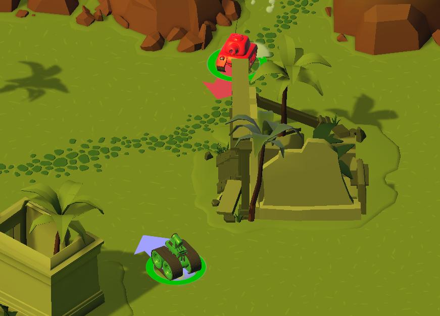
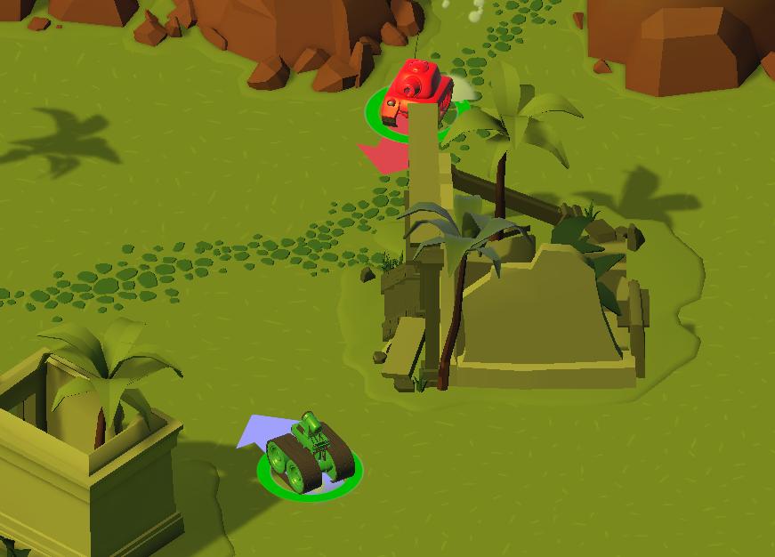
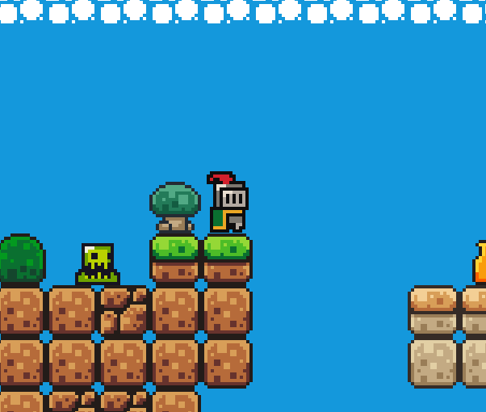
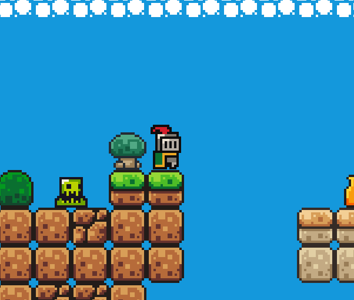
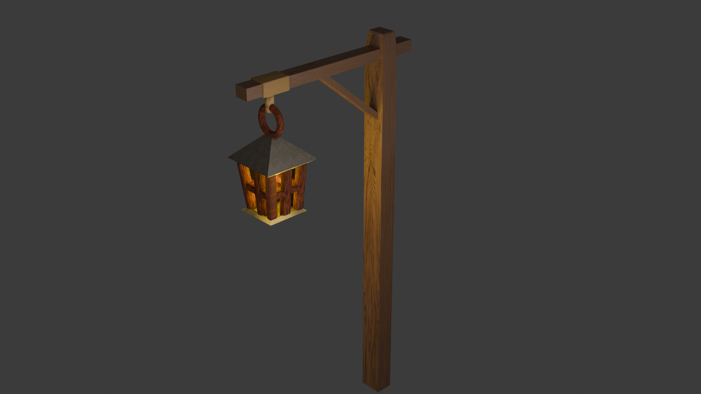
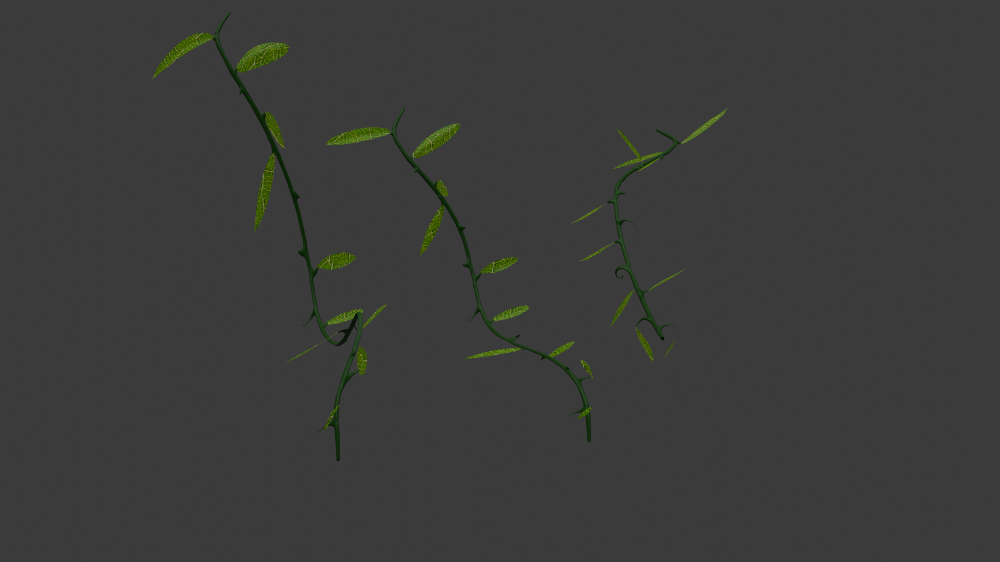
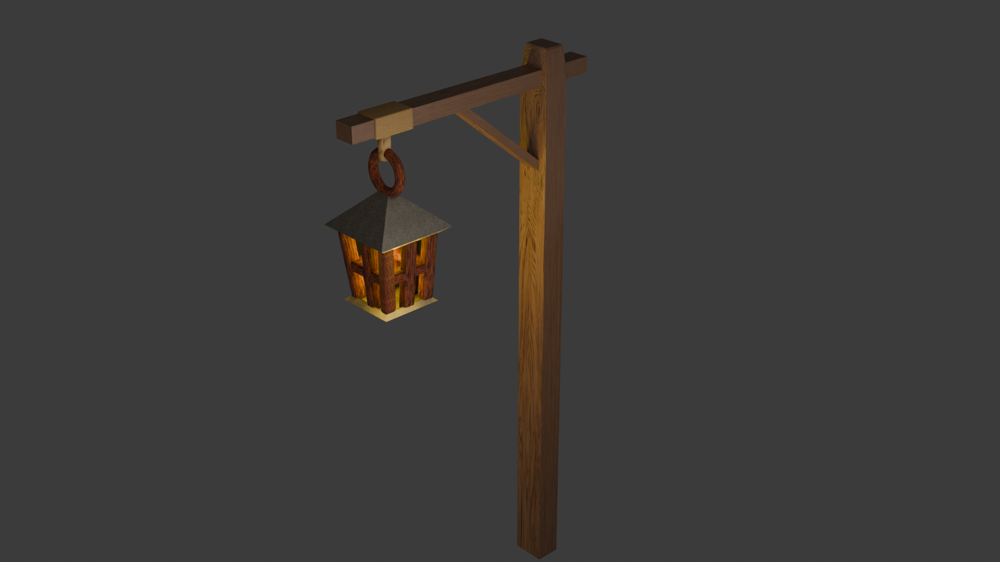
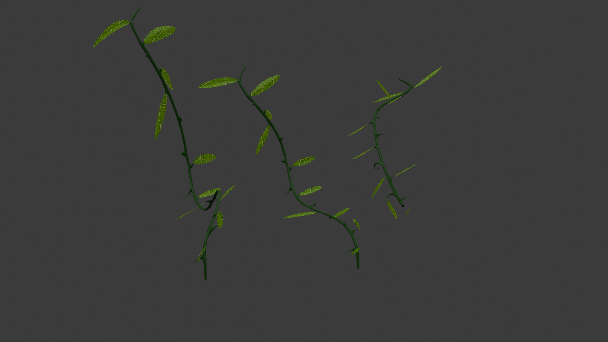

À propos de moi
Bonjour, je suis Nelson Bidault, un développeur passionné et qui aime finaliser correctement ses projets !
Vous aurez peut-être l'occasion de me rencontrer et de constater mon côté créatif et travailleur, avec bien sûr ma bonne humeur. 😊
J’ai depuis mon plus jeune âge une grande passion pour le jeu vidéo, que ce soit le gameplay, graphismes ou le son.
Cette passion m’a naturellement donné envie de travailler dans ce domaine, mais j’ai également un intérêt marqué pour le développement web. 🕹️
Je suis également très intéressé par les nouvelles technologies, les cultures et langues étrangères ainsi que par la musique, que je consomme quotidiennement 🎶
C'est une très courte introduction de moi-même, mais je suis évidemment ouvert à tout échange. Vous trouverez mes contacts en bas de mon portfolio !
Compétences techniques développées lors de mon BTS
Langages
C++, SQL, Python, PHP, HTML/CSS, Javascript, Java, C#
Framework
Symfony, JQuery
Conception
Je maîtrise l’architecture MVC
Modèle Conceptuel de Données
Modèle Relationnel de Données
Sécurité
Cybersécurité
RGPD
Matrice des risques
Voici quelques exemples de travaux produits lors de mon BTS :
Fiches de procédures réalisées sur diverses thématiques techniques :
Logiciels utilisés


Projets Personnels
Unity Learn
J'ai réalisé un projet solo sur Unity dans le cadre d’un parcours Unity Learn. Ce projet m’a permis de me familiariser progressivement avec le moteur et de gagner en aisance avec ses différents outils.
Au fil du développement, j’ai exploré plusieurs domaines essentiels, notamment le sound design, l’éclairage, les shaders ainsi que la mise en place de comportements IA. Cette expérience m’a donné une vision plus complète du pipeline de création et m’a aidé à renforcer mes compétences techniques.
Ce projet a été pour moi une étape importante, me permettant d’expérimenter librement, de comprendre en profondeur le fonctionnement du moteur et de prendre confiance dans mes capacités à mener un jeu de A à Z.
Vous pouvez essayer le jeu "Tanks!", juste ici sur itch.io ! : Tanks! ⚔️
 

Quick Scope
J’ai participé au développement de QuickScope, un jeu réalisé en 2 jours et demi dans le cadre d’une Game Jam. Nous étions une équipe composée d’un sound designer, d’un graphiste et de trois programmeurs. Le thème de la jam, “It always ends like this”, nous a inspiré un sujet méta : celui des projets de Game Jam qui ne sont jamais vraiment terminés à cause de l’overscope — le fait de viser trop grand pour le temps imparti.
Le jeu se déroule sur un vieux système d’exploitation fictif, dans lequel le joueur doit compléter trois mini-jeux (programmation, sound design et graphisme) avant la fin d’un compte à rebours, à l’image de la pression réelle d’une Game Jam. Je me suis principalement occupé du mini-jeu dédié au sound design, une application inspirée des anciens logiciels de création musicale. Le but était de faire glisser différentes notes pour reproduire un court morceau donné en exemple.
Bien que le projet n’ait pas pu être entièrement terminé dans les délais, nous avons obtenu une version solide et largement avancée. Cette expérience a été l’occasion de collaborer efficacement en équipe et d’explorer une approche humoristique et réflexive du développement en Game Jam.
Voici quelques images du projet, il faut essayer d'imaginer le mini jeu du son avec la possibilitée de mettre les blocs sur la grille de lecture (puis faire l'extrait réalisé!) 😊 :
Participations à des game Jams
J'ai eu l'opportunité de participer à ma première Game Jam, la "Global Game Jam Toulouse" de 2025 (du 24/01 au 26/01).
Cette expérience m'a permis de collaborer avec une équipe de cinq personnes dans un délai très court. J'ai découvert de nouveaux outils et méthodes de travail grâce aux membres plus expérimentés qui ont partagé leurs connaissances.
Notre équipe était composée de quatre développeurs, dont deux en études dans le domaine, et une graphiste. J'ai principalement travaillé sur la gestion des ennemis et de leurs comportements, tout en contribuant à d'autres petites tâches.
Voici quelques images de notre jeu final, nommé "Blown Away", que vous pouvez essayer sur ce lien itch.io : Blown Away 🫧
Développement sur Godot
Après m'être beaucoup informé sur le sujet, je me suis davantage familiarisé avec l'interface de Godot et son langage GDScript.
J'ai suivi de nombreux tutoriels sur son utilisation, et réalisé de petits projets.
Vous pouvez retrouver par exemple un projet de test, lui aussi encore en développement :
 

Développement de Daidalos
Actuellement en développement d'un jeu vidéo en duo, encore en développement.
Destiné à être un jeu 3D fait à l'aide de Unity et des modèles sur Blender, celui-ci prend place dans un labyrinthe où plusieurs pièges devront être résolus à l'aide de matériel trouvés à la surface, sur une île déserte.
Le projet étant assez conséquent, aucune date de fin de développement n'est définie.
 


